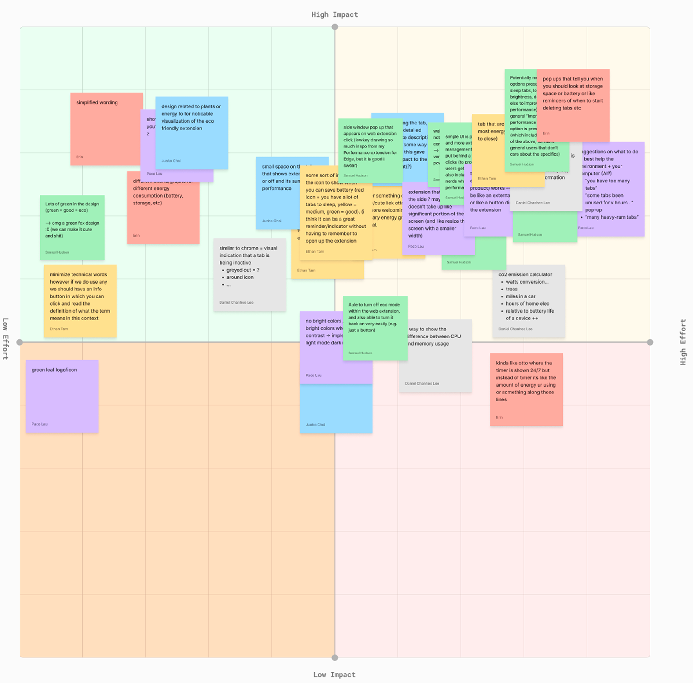
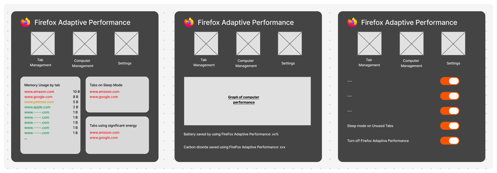
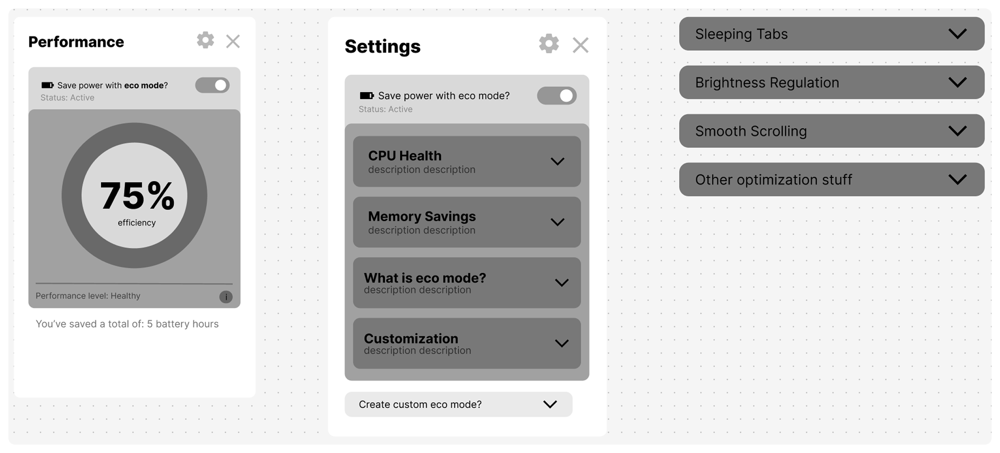
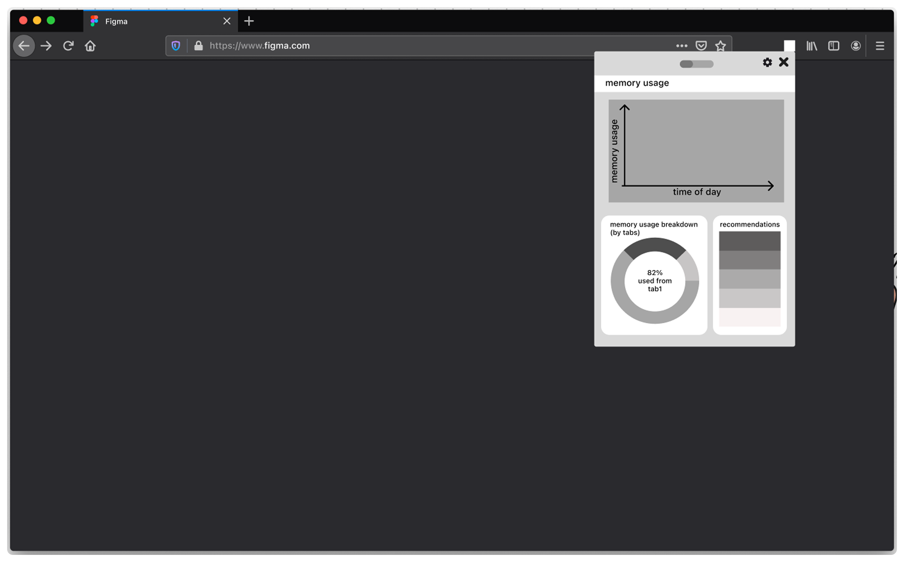
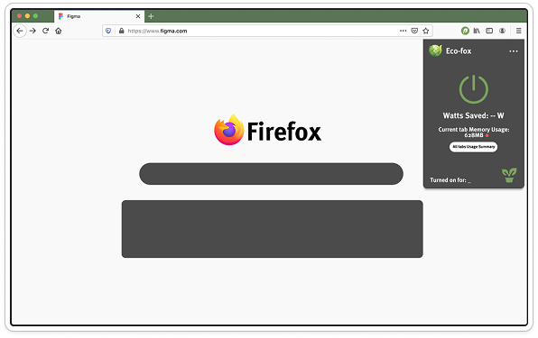
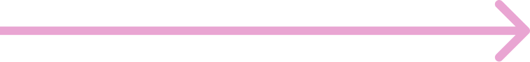
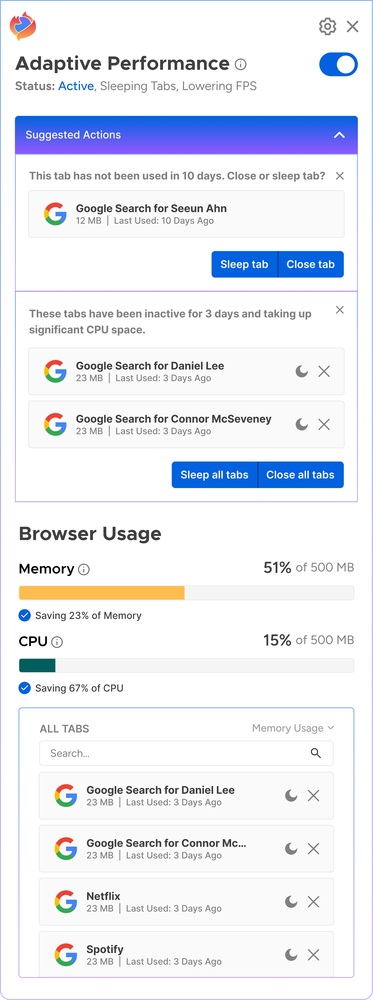
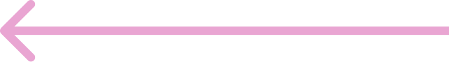

A FireFox adaptive performance extension to encourage eco-conscious browsing behaviors.

overview.
Background: This project was completed in Invention Corps, a human-centered design club at UC Berkeley. A group of 8, including myself, worked on improving the browsing experience within Mozilla FireFox by introducing a new extension.
Problem: While researching current browser performance management and user settings, we found that existing solutions lack intuitive ways for users to understand and control how their resources (CPU, memory, energy) are being used. There is a gap between the complexity of performance optimization and how it is presented in the user interface, resulting in limited personalization and inefficient resource usage for many users.

research process.
To identify existing solutions, with core strengths including seamless integration & streamlined access.
To identify quantitative user behavior and pain points to include user-centric design decisions.
To identify quantitative user behavior and pain points to include user-centric design decisions.
To identify usage boundaries and existing limitations to computer systems.

research implications.

design goals.
- Support different browsing priorities (speed vs. battery vs. sustainability)
- Adapt to different browsing behaviors (heavy tabs, extensions, background usage)
- Minimize the need for manual setup, unnecessary features, and ongoing user management
- Integrate natively into existing browser workflows (tabs, extensions, settings)
- Avoid excessive pop-ups or interruptions while still keeping controls easily accessible

product ideation.
Impact/Effort Matrix


wireframing and lowfis.





final extension.




demo.

user feedback.
- Clearer feedback after actions
- Explanation of passive processes
- Give users oversight over tab usage across windows
- Clear, visible performance diagnostics across all tabs
- Auto sleeping tabs
- Background tab optimization
- Adjustable performance thresholds
future suggestions.
- Video buffering
- Memory limit reached
- Increased FCP/LCP
- Frame rate drops
- Event handler latency
- Increased script execution time
- Dormancy patterns
- Temporal/behavioral patterning
- Domain clusters
- Background media
- "One-time" content recognition
- Best-fit recommendation for your current browsing habits